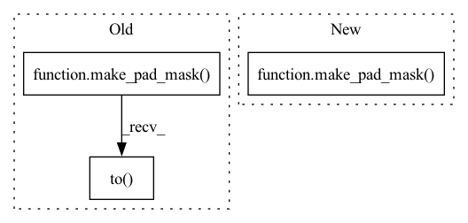

Pattern ID :17824

Before Change
x_masks = self._source_mask(ilens)
hs, _ = self.encoder(xs, x_masks)
d_masks = make_pad_mask(ilens).to(xs.device)
if self.stop_gradient_from_pitch_predictor:
p_outs = self.pitch_predictor(hs.detach(), d_masks.unsqueeze(-1))
else:
p_outs = self.pitch_predictor(hs, d_masks.unsqueeze(-1))
After Change
encoded_texts, _ = self.encoder(text_tensors, text_masks, utterance_embedding=utterance_embedding) // (B, Tmax, adim)
// forward duration predictor and variance predictors
d_masks = make_pad_mask(text_lens, device=text_lens.device)
if self.stop_gradient_from_pitch_predictor:
pitch_predictions = self.pitch_predictor(encoded_texts.detach(), d_masks.unsqueeze(-1))
else:
In pattern: SUPERPATTERN
Frequency: 3
Non-data size: 3
Instances
Fragment ID: 58555759
Project Name: digitalphonetics/ims-toucan
Commit Name: 30192b7e37d15dea00356e6bfda8808c46928f6b
Time: 2022-01-11
Author: florian.lux@ims.uni-stuttgart.de
File Name: InferenceInterfaces/InferenceArchitectures/InferenceFastSpeech2.py
M Class Name: FastSpeech2
N Class Name: FastSpeech2
M Method Name: _forward(11)
N Method Name: _forward(10)
M Parent Class: torch.nn.Module,ABC
N Parent Class: torch.nn.Module,ABC
M File Name: InferenceInterfaces/InferenceArchitectures/InferenceFastSpeech2.py
N File Name: InferenceInterfaces/InferenceArchitectures/InferenceFastSpeech2.py
M Start Line: 155
M End Line: 175
N Start Line: 138
N End Line: 171
'>
Before Change
encoded_texts, _ = self.encoder(text_tensors, text_masks) // (B, Tmax, adim)
// forward duration predictor and variance predictors
d_masks = make_pad_mask(text_lens).to(text_tensors.device)
if self.stop_gradient_from_pitch_predictor:
pitch_predictions = self.pitch_predictor(encoded_texts.detach(), d_masks.unsqueeze(-1))
else:
After Change
encoded_texts, _ = self.encoder(text_tensors, text_masks) // (B, Tmax, adim)
// forward duration predictor and variance predictors
d_masks = make_pad_mask(text_lens, device=text_tensors.device)
if self.stop_gradient_from_pitch_predictor:
pitch_predictions = self.pitch_predictor(encoded_texts.detach(), d_masks.unsqueeze(-1))
else:
'>
Fragment ID: 58555758
Project Name: digitalphonetics/ims-toucan
Commit Name: 623d6b656b7f9dcdf6a75be596f91342c70d268b
Time: 2021-10-20
Author: florian.lux@ims.uni-stuttgart.de
File Name: TrainingInterfaces/Text_to_Spectrogram/FastSpeech2/FastSpeech2.py
M Class Name: FastSpeech2
N Class Name: FastSpeech2
M Method Name: _forward(10)
N Method Name: _forward(10)
M Parent Class: torch.nn.Module,ABC
N Parent Class: torch.nn.Module,ABC
M File Name: TrainingInterfaces/Text_to_Spectrogram/FastSpeech2/FastSpeech2.py
N File Name: TrainingInterfaces/Text_to_Spectrogram/FastSpeech2/FastSpeech2.py
M Start Line: 228
M End Line: 228
N Start Line: 230
N End Line: 230
'>
Before Change
olens = speech_lengths
// make labels for stop prediction
labels = make_pad_mask(olens - 1).to(ys.device, ys.dtype)
labels = F.pad(labels, [0, 1], "constant", 1.0)
// calculate tacotron2 outputs
after_outs, before_outs, logits, att_ws = self._forward(xs, ilens, ys, olens, speaker_embeddings)
After Change
// eos is [0, 0, 0, 0, 0, 0, 0, 0, 0, 0, 0, 0, 0, 0, 0, 0, 0, 0, 0, 0, 0, 0, 0, 0, 0]
// make labels for stop prediction
labels = make_pad_mask(speech_lengths - 1).to(speech.device, speech.dtype)
labels = F.pad(labels, [0, 1], "constant", 1.0)
// calculate tacotron2 outputs
'>
Fragment ID: 58555761
Project Name: digitalphonetics/ims-toucan
Commit Name: 24ca2ac33029f434e47969661b0a878773639ab8
Time: 2021-08-12
Author: florian.lux@ims.uni-stuttgart.de
File Name: TrainingInterfaces/Text_to_Spectrogram/Tacotron2/Tacotron2.py
M Class Name: Tacotron2
N Class Name: Tacotron2
M Method Name: forward(6)
N Method Name: forward(6)
M Parent Class: torch.nn.Module
N Parent Class: torch.nn.Module
M File Name: TrainingInterfaces/Text_to_Spectrogram/Tacotron2/Tacotron2.py
N File Name: TrainingInterfaces/Text_to_Spectrogram/Tacotron2/Tacotron2.py
M Start Line: 179
M End Line: 208
N Start Line: 183
N End Line: 199